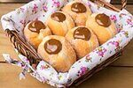

Sobre o Cat Café
Para os gateiros apaixonados não há nada melhor do que passar uma tarde preguiçosa bebendo um saboroso café na companhia de um bichano. Pensando nisso, criou-se o cat café! Esse espaço dedicado aos amantes dos felinos tem uma proposta diferente: além da decoração focada em gatos, você ainda pode passar bons momentos ao lado de peludos que vivem ali! Trata-se de um estabelecimento com um conceito simples e fascinante: restaurante que além de servir café e outras refeições, permite que os clientes se encantem com fofos bichanos. Ou seja, enquanto você se delicia com seu aperitivo favorito, graciosos felinos desfilam pelo espaço. Além de pets, a decoração, os enfeites e até mesmo o menu são baseados nos bigodudos. Em outras palavras, cat café é imperdível para os gateiros de plantão!
Por que visitar o Cat Café?
- Bichanos fofos e bem cuidados
- Ambiente aconchegante
- Café de alta qualidade
- Quitutes deliciosos
Venha nos visitar!
Horário de funcionamento
| Dia | horário |
|---|---|
| Segunda-feiras | 06h30 às 19h |
| Terça-feiras | 06h30 às 19h |
| Quarta-feiras | 06h30 às 19h |
| Quinta-feiras | 06h30 às 19h |
| Sexta-feiras | 06h30 às 19h |
| Sábados | 7h às 19h |
| Domingos | 07h às 11h30 |